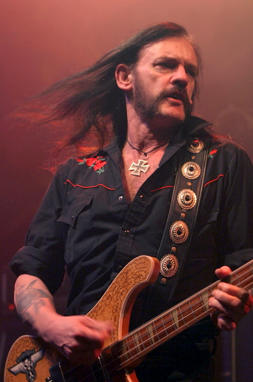

Ian Fraser Lemmy Kilmister
Born to Lose, Live to Win

Ian Fraser Kilmister, better known as Lemmy, was an English singer, songwriter,
and musician who founded and fronted the rock band Motörhead.
- 24 December 1945 - Born in the Burslem area of Stoke-on-Trent, Staffordshire, England
- 1960–1970: in Stockport, Lemmy joined local bands the Rainmakers and then the Motown Sect who played northern clubs for three years. In 1965, he joined the Rockin' Vickers who signed a deal with CBS, released three singles and toured Europe, reportedly being the first British band to visit the Socialist Federal Republic of Yugoslavia. The Rockin' Vickers moved to Manchester, where they shared a flat together. There, Lemmy got involved with a woman named Tracy who bore a son, Paul Inder. Lemmy did not have any involvement in his life until the boy was six.Leaving the Rockin' Vickers, Lemmy moved to London in 1967. He shared a flat with Noel Redding, bassist of the Jimi Hendrix Experience, and with Neville Chesters, their road manager. He got a job as a roadie for the band. In 1968, he joined the psychedelic rock band Sam Gopal under the name Ian Willis and recorded the album Escalator which was released in 1969. After meeting Simon King at a shopping centre in Chelsea in 1969, he joined the band Opal Butterfly; but the group soon disbanded, having failed to raise enough interest with their singles.
- 1971–1975: in August 1971, Lemmy joined the space rock band Hawkwind, who were based in Ladbroke Grove, London, as a bassist and vocalist. He had no previous experience as a bass guitarist, and was cajoled into joining immediately before a benefit gig in Notting Hill by bandmate Michael "Dik Mik" Davies, to have two members who enjoyed amphetamines. He quickly developed a distinctive style that was strongly shaped by his early experience as a rhythm guitarist, often using double stops and chords rather than the single note lines preferred by most bassists. His bass work was a fundamental part of the Hawkwind sound during his tenure, perhaps best documented on Space Ritual. He also provided the lead vocals on several songs, including the band's biggest UK chart single, "Silver Machine", which reached #3 in 1972. In 1975, Lemmy was arrested at the Canada/United States border in Windsor, Ontario, on drug possession charges; he spent five days in jail but was released without charge. Nonetheless, he was fired from Hawkwind. He once said of Hawkwind: ""I did like being in Hawkwind, and I believe I’d still be playing with them today if I hadn’t been kicked out. It was fun onstage, not so much offstage. They didn’t want to mesh with me. Musically, I loved the drummer, the guitar player. It was a great band.”
- 1975–2015: after Hawkwind, Lemmy formed a new band called "Bastard" with guitarist Larry Wallis (former member of the Pink Fairies, Steve Took's Shagrat and UFO) and drummer Lucas Fox. Lemmy and Took were friends, and Took was the stepfather to Lemmy's son Paul. When his manager informed him that a band by the name of "Bastard" would never get a slot on Top of the Pops, Lemmy changed the band's name to "Motörhead" – the title of the last song he had written for Hawkwind. Soon after, both Wallis and Fox were replaced with guitarist "Fast" Eddie Clarke and drummer Phil "Philthy Animal" Taylor and with this line-up, the band began to achieve success. Lemmy's guttural vocals were unique in rock at that time, and were copied during the time when punk rock became popular. The band's sound appealed to Lemmy's original fans and, eventually, to fans of punk. Lemmy asserted that he generally felt more kinship with punks than with metalheads; he even played with the Damned for a handful of gigs when they had no regular bassist. The band's success peaked in 1980 and 1981 with several UK chart hits, including the single "Ace of Spades", which remained a crowd favourite throughout the band's career, and the UK #1 live album No Sleep 'til Hammersmith. Motörhead became one of the most influential bands in the heavy metal genre. Their – and Lemmy's – final live performance was in Berlin, Germany on 11 December 2015.
- 24 December 1945 - dies at the age of 70 in Los Angeles, California, United States.
Here's a timeline of Lemmy's life:
"We recorded his track in Los Angeles in maybe two takes about a year and a half ago. Until then I'd never met what I'd call a real rock 'n' roll hero before. Fuck Elvis and Keith Richards, Lemmy's the king of rock 'n' roll – he told me he never considered Motörhead a metal band, he was quite adamant. Lemmy's a living, breathing, drinking and snorting fucking legend. No one else comes close."
Dave Grohl, founder, frontman, lead vocalist, rhythm guitarist and primary songwriter of the rock band Foo Fighters